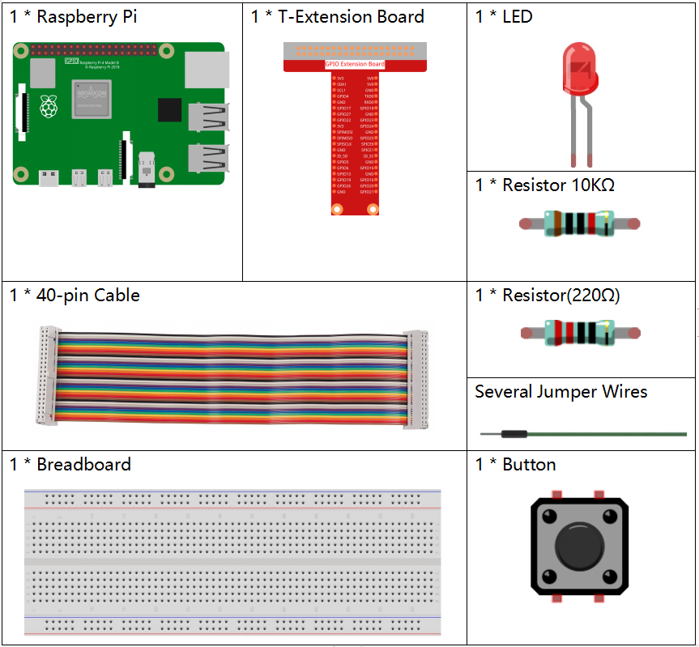

Note
Bonjour et bienvenue dans la communauté SunFounder dédiée aux passionnés de Raspberry Pi, Arduino et ESP32 sur Facebook ! Plongez plus profondément dans l’univers du Raspberry Pi, Arduino et ESP32 avec d’autres passionnés.
Pourquoi nous rejoindre ?
Support d’experts : Résolvez vos problèmes après-vente et relevez des défis techniques avec l’aide de notre communauté et de notre équipe.
Apprendre & Partager : Échangez des conseils et des tutoriels pour perfectionner vos compétences.
Aperçus exclusifs : Bénéficiez d’un accès anticipé aux annonces de nouveaux produits et aux avant-premières.
Réductions spéciales : Profitez de remises exclusives sur nos derniers produits.
Promotions festives et cadeaux : Participez à des tirages au sort et à des promotions spéciales pour les fêtes.
👉 Prêt(e) à explorer et à créer avec nous ? Cliquez sur [Ici] et rejoignez-nous dès aujourd’hui !
2.1.1 Bouton
Introduction
Dans cette leçon, nous allons apprendre à allumer ou éteindre une LED en utilisant un bouton.
Composants
Principe
Bouton
Le bouton est un composant courant utilisé pour contrôler des dispositifs électroniques. Il est généralement utilisé comme interrupteur pour connecter ou couper les circuits. Bien qu’il existe sous différentes formes et tailles, celui que nous utilisons ici est un mini-bouton de 6 mm comme montré ci-dessous.
Les deux broches de gauche sont connectées ensemble, et celles de droite le sont aussi, comme illustré ci-dessous :

Le symbole suivant est souvent utilisé pour représenter un bouton dans les circuits :

Lorsque le bouton est pressé, les 4 broches sont connectées, fermant ainsi le circuit.
Schéma de câblage
Utilisez un bouton normalement ouvert comme entrée pour le Raspberry Pi, le schéma de câblage est illustré ci-dessous. Lorsque le bouton est pressé, le GPIO18 passera à un niveau bas (0V). Nous pouvons détecter l’état du GPIO18 par programmation. Autrement dit, si le GPIO18 devient bas, cela signifie que le bouton est pressé. Vous pouvez exécuter le code correspondant lorsque le bouton est pressé, et ainsi la LED s’allumera.
Note
La broche la plus longue de la LED est l’anode, et la plus courte est la cathode.


Procédures expérimentales
Étape 1 : Montez le circuit.

Étape 2 : Ouvrez le fichier de code.
cd ~/davinci-kit-for-raspberry-pi/c/2.1.1/
Note
Changez de répertoire pour accéder au chemin du code de cette expérience via cd.
Étape 3 : Compilez le code.
gcc 2.1.1_Button.c -lwiringPi
Étape 4 : Exécutez le fichier exécutable.
sudo ./a.out
Après l’exécution du code, appuyez sur le bouton pour allumer la LED ; sinon, elle s’éteint.
Note
Si cela ne fonctionne pas après l’exécution, ou s’il y a un message d’erreur indiquant : "wiringPi.h: No such file or directory", veuillez consulter C code is not working?.
Code
#include <wiringPi.h>
#include <stdio.h>
#define LedPin 0
#define ButtonPin 1
int main(void){
// En cas d'échec de l'initialisation de wiringPi, afficher un message à l'écran
if(wiringPiSetup() == -1){
printf("setup wiringPi failed !");
return 1;
}
pinMode(LedPin, OUTPUT);
pinMode(ButtonPin, INPUT);
digitalWrite(LedPin, HIGH);
while(1){
// Indiquer que le bouton est enfoncé
if(digitalRead(ButtonPin) == 0){
// Allumer la LED
digitalWrite(LedPin, LOW);
// printf("...LED allumée\n");
}
else{
// Éteindre la LED
digitalWrite(LedPin, HIGH);
// printf("LED éteinte...\n");
}
}
return 0;
}
Explication du code
#define LedPin 0
La broche GPIO17 sur la carte T_Extension est équivalente à GPIO0 dans wiringPi.
#define ButtonPin 1
ButtonPin est connecté à GPIO1.
pinMode(LedPin, OUTPUT);
Définit LedPin comme sortie pour lui attribuer une valeur.
pinMode(ButtonPin, INPUT);
Définit ButtonPin comme entrée pour lire sa valeur.
while(1){
// Indiquer que le bouton est enfoncé
if(digitalRead(ButtonPin) == 0){
// Allumer la LED
digitalWrite(LedPin, LOW);
// printf("...LED allumée\n");
}
else{
// Éteindre la LED
digitalWrite(LedPin, HIGH);
// printf("LED éteinte...\n");
}
}
if (digitalRead(ButtonPin) == 0): vérifier si le bouton a été enfoncé. Exécutez digitalWrite(LedPin, LOW) pour allumer la LED lorsque le bouton est pressé.